R/est-param-hypergeometric.R
util_hypergeometric_param_estimate.RdThis function will attempt to estimate the geometric prob parameter
given some vector of values .x. Estimate m, the number of white balls in
the urn, or m+n, the total number of balls in the urn, for a hypergeometric
distribution.
util_hypergeometric_param_estimate(
.x,
.m = NULL,
.total = NULL,
.k,
.auto_gen_empirical = TRUE
)A non-negative integer indicating the number of white balls out of a
sample of size .k drawn without replacement from the urn.
You cannot have missing, undefined or infinite values.
Non-negative integer indicating the number of white balls in the urn.
You must supply .m or .total, but not both. You cannot have missing values.
A positive integer indicating the total number of balls in the
urn (i.e., m+n). You must supply .m or .total, but not both. You cannot
have missing values.
A positive integer indicating the number of balls drawn without replacement from the urn. You cannot have missing values.
This is a boolean value of TRUE/FALSE with default
set to TRUE. This will automatically create the tidy_empirical() output
for the .x parameter and use the tidy_combine_distributions(). The user
can then plot out the data using $combined_data_tbl from the function output.
A tibble/list
This function will see if the given vector .x is a numeric integer.
It will attempt to estimate the prob parameter of a geometric distribution.
Missing (NA), undefined (NaN), and infinite (Inf, -Inf) values are not allowed.
Let .x be an observation from a hypergeometric distribution with parameters
.m = M, .n = N, and .k = K. In R nomenclature, .x represents
the number of white balls drawn out of a sample of .k balls drawn without
replacement from an urn containing .m white balls and .n black balls.
The total number of balls in the urn is thus .m + .n. Denote the total
number of balls by T = .m + .n
Other Parameter Estimation:
util_beta_param_estimate(),
util_binomial_param_estimate(),
util_exponential_param_estimate(),
util_gamma_param_estimate(),
util_geometric_param_estimate(),
util_logistic_param_estimate(),
util_lognormal_param_estimate(),
util_negative_binomial_param_estimate(),
util_normal_param_estimate(),
util_pareto_param_estimate(),
util_poisson_param_estimate()
Other Hypergeometric:
tidy_hypergeometric()
library(dplyr)
library(ggplot2)
th <- rhyper(10, 20, 30, 5)
output <- util_hypergeometric_param_estimate(th, .total = 50, .k = 5)
output$parameter_tbl
#> # A tibble: 2 x 5
#> dist_type samp_size method m total
#> <chr> <int> <chr> <dbl> <dbl>
#> 1 Hypergeometric 10 EnvStats_MLE 30.6 NA
#> 2 Hypergeometric 10 EnvStats_MVUE 30 50
output$combined_data_tbl %>%
ggplot(aes(x = y, group = dist_type, fill = dist_type)) +
geom_histogram(binwidth = 0.5, color = "black") +
theme_minimal() +
theme(legend.position = "bottom")
